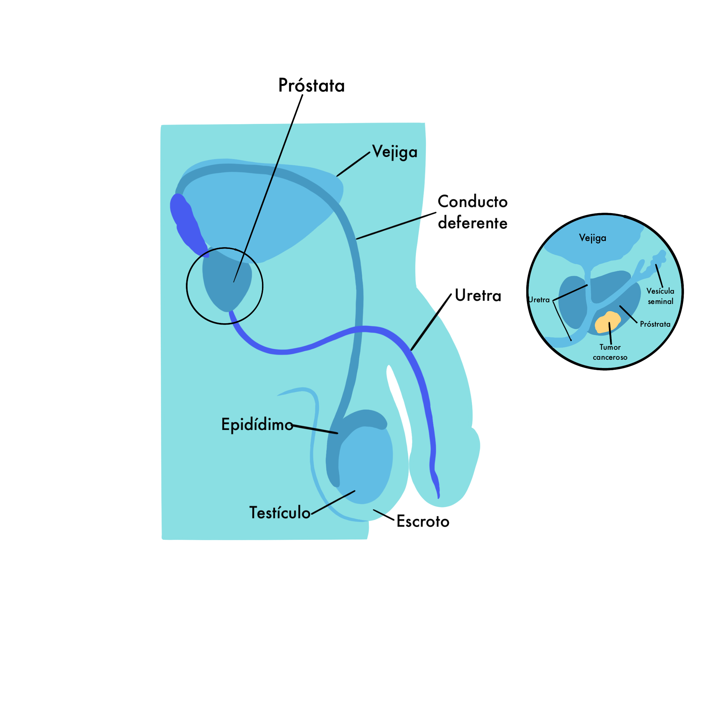
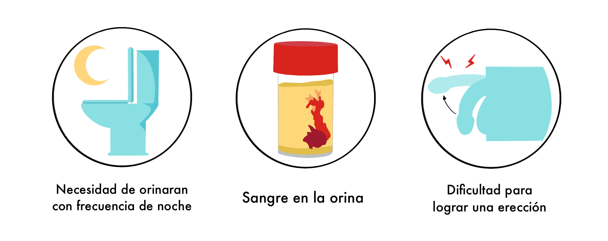

Se origina cuando las células de la próstata comienzan a crecer fuera de control. La próstata es una glándula que sólo tienen los hombres, que produce parte del líquido del semen. La próstata está debajo de la vejiga y delante del recto. Justo detrás de la próstata se encuentran las vesículas seminales,que producen la mayor parte del líquido del semen. La uretra, que transporta la orina y el semen fuera del cuerpo, pasa por el centro de la próstata. El tamaño de la próstata puede cambiar a medida que el hombre envejece. En los más jóvenes, es del tamaño aproximado de una nuez. Puede ser mucho más grande en hombres de más edad.
 {# #} {{section_header("sintomas", section_headers)}}En etapa inicial no causa síntomas. Pero en etapas más avanzadas puede causar síntomas, como:
Se debe hablar con un médico para asegurarse de la causa de estas señales.
 {# #} {{section_header("prevencion", section_headers)}}Existen algunas medidas que puede tomar para tratar de reducir su riesgo: